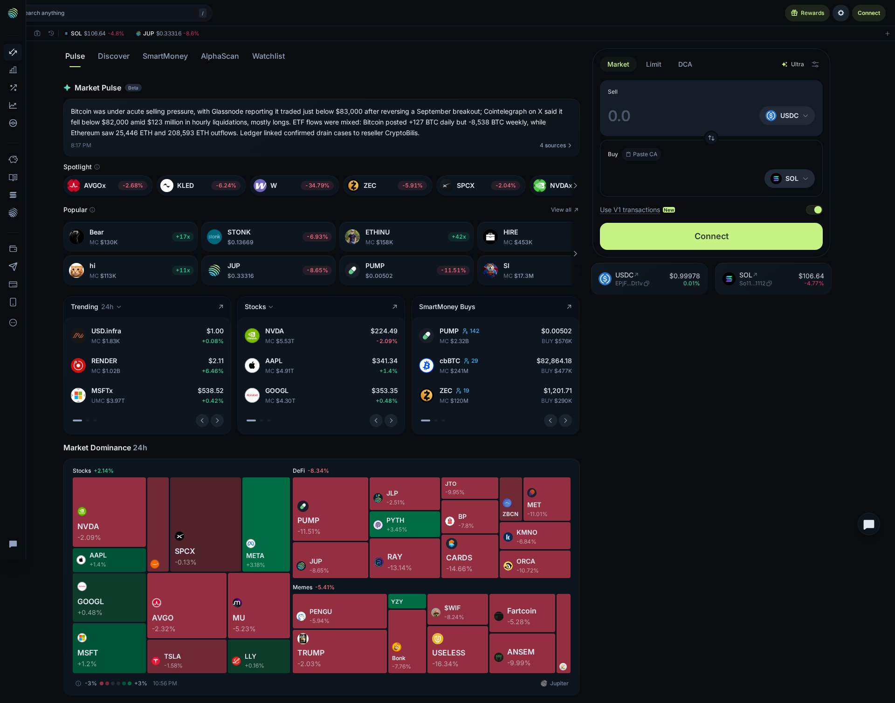
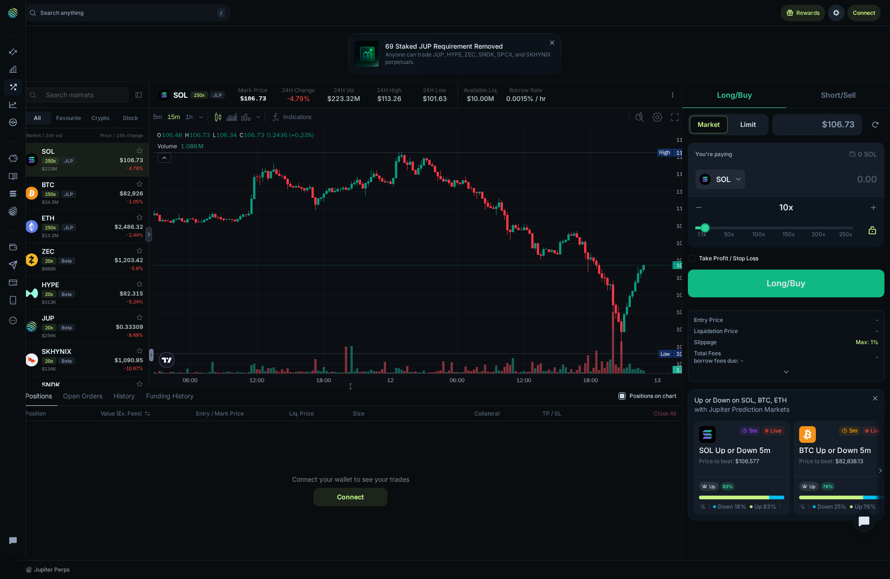
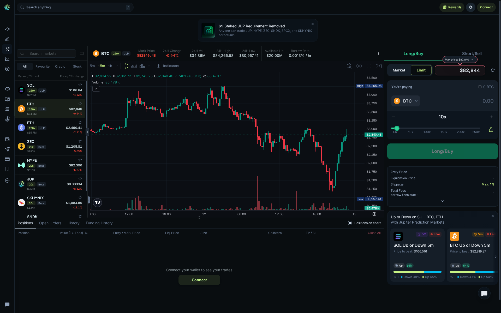
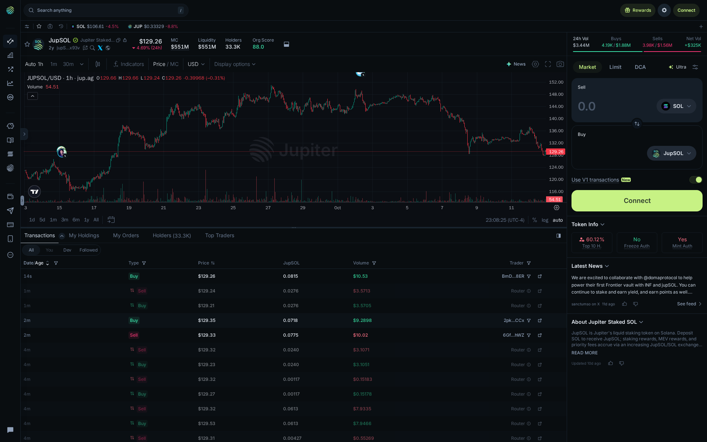
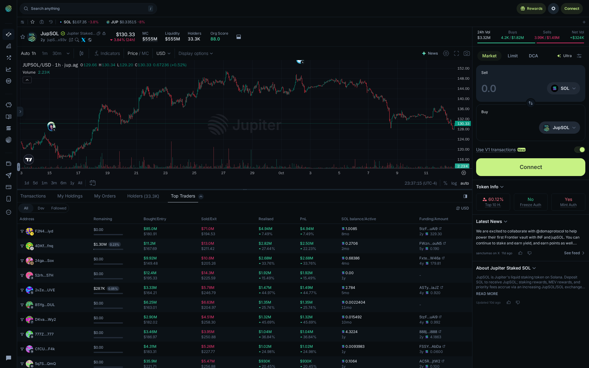
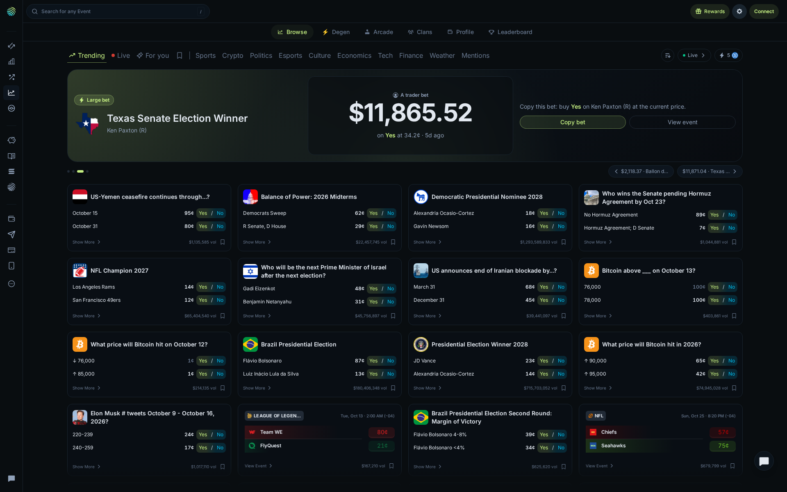
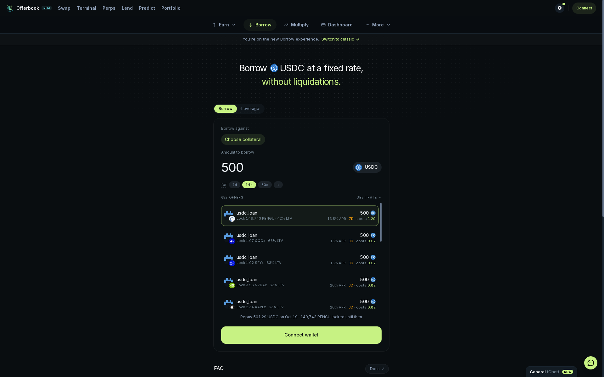
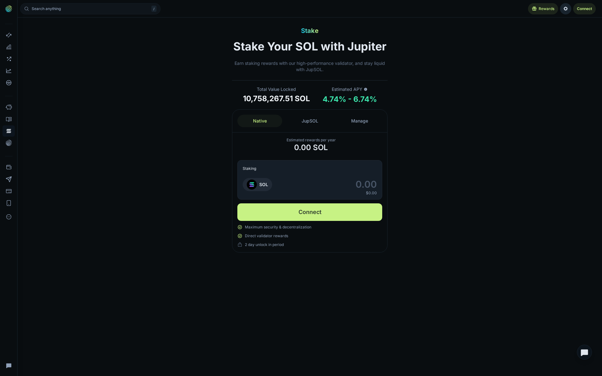
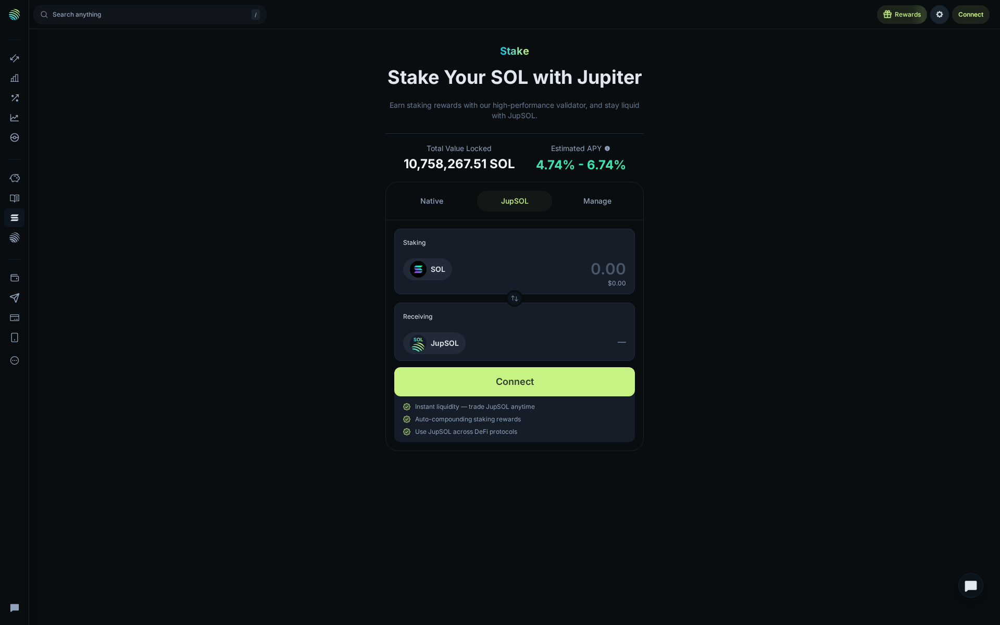

Jupiter Review 2026: One Solana Front Door, Six Different User Journeys
Verdict: Jupiter feels less like one DEX and more like a Solana operating system. That creates exceptional product breadth before wallet connection, but it also creates a dense first visit. The public app is strongest where it explains a decision before asking for a wallet—Perps, Offerbook, token research, and Stake.
What Was Actually Walked Through
| Product | Public interaction | Financial action not taken |
|---|---|---|
| Spot | Opened Market and Limit layouts | Enter amount / connect / swap |
| Perps | Changed SOL to BTC and opened Limit | Enter size / Long / Short |
| JupSOL | Changed Transactions to Top Traders | Trade the token |
| Prediction | Loaded Browse and advanced carousel | Copy bet / Yes / No |
| Offerbook | Compared live USDC offers | Select collateral / accept loan |
| Stake | Changed Native to JupSOL | Connect / stake SOL |
First Impression: More Than a Swap Widget
The opening Spot screen does not centre a single oversized swap box. Market Pulse, Spotlight, Popular, Trending, Stocks, SmartMoney Buys, and a heatmap occupy the primary canvas; USDC-to-SOL is docked at the side.

What was clicked: Limit. The form changed from immediate swap framing to a target-price flow while retaining the pair context. Market, Limit, DCA, Ultra, Paste CA, V1 transactions, and Connect were accessible without a wallet. The upside is research and action in one view; the downside is substantial cognitive load. Official Spot documentation.
Product Screens: What the Public Walkthrough Actually Shows
Perps: Risk Context Appears Before the Wallet Prompt
The SOL Perps route loaded a full terminal rather than a simplified leverage card: chart, market list, order form, position area, and liquidity context.

Market/Limit, Long/Buy and Short/Sell, 10x default leverage, a 1.1x–250x slider, TP/SL, liquidation context, and Max 1% slippage were visible with zero size entered.
What was clicked: BTC, then Limit.

The layout remained consistent but the price, liquidity, and borrow context changed. Limit exposed a target entry field while order size stayed 0 BTC. Jupiter shows the relevant risk inputs early; that does not make the 250x ceiling appropriate. Jupiter Perps.
JupSOL: Research Goes Beyond the Price Chart
What was clicked: JupSOL token page, then Top Traders.

The initial state combined the chart, transaction rows at $129.26/$129.24/$129.21, swap controls, and token flags: 60.12% Top 10 Holders, No Freeze Auth, and Yes Mint Auth.

Top Traders replaced transactions with entry/exit, realised value, PnL, and activity columns. Leading displayed realised/PnL rows were $4.94M, $2.50M, $2.68M, and $1.92M. This is strong token-flow research, not a copy-trading instruction.
Prediction: A Full Browse Grid After Loading
The first quick view was incomplete; a longer revisit loaded a full Prediction browse grid across politics, crypto, sports, culture, economics, tech, finance, and weather.

What was clicked: the featured-bet carousel. It changed to a $11,871.04 No bet on James Talarico. Copy bet, Yes, and No were not selected, so trade routing and settlement remain unverified.
Offerbook: The Strongest Pre-Commitment Lending Disclosure
The public Offerbook route showed actual offer terms before the wallet barrier.

With 14d selected, the top PENGU offer showed 42% LTV, 13.5% APR, cost 1.29, and 149,743 PENGU locked. Other rows showed 63% LTV at 15% APR / 3d / cost 0.62, and 20% APR / 3d / cost 0.82. The journey stopped at Choose collateral and Connect wallet.
Stake: Native Versus JupSOL Is a Real Product Choice
What was clicked: Native, then JupSOL.


Native emphasises direct validator rewards and an unlock period. JupSOL emphasises liquidity after staking. The public app explains that trade-off well; reward accrual and unstaking were not tested.
Three Real User Journeys Jupiter Handles Well
The clearest way to judge Jupiter is not by asking whether every tab suits every visitor. It is by following the paths that connect naturally.
1. Token researcher
Spot → token page → Transactions → Top Traders. The opening dashboard supplies discovery signals; the JupSOL page then supplies price, liquidity, holder concentration, live prints, token flags, and trader-flow data. No external tab was required to move from “this asset is moving” to “who is trading it and how concentrated is it?” The strongest evidence is concrete: $551M liquidity, 33.3K holders, and 60.12% held by the top ten. Jupiter surfaces the inputs well, though it leaves the interpretation of acceptable concentration to the user.
2. Active perps trader
Perps → select market → compare header data → choose Market or Limit → decide whether connecting a wallet is justified. The SOL-to-BTC switch showed that this is not a cosmetic market list: price, volume, available liquidity, borrow rate, chart, and entry controls changed together while the risk controls remained in place. The useful feature is not the 250x label; it is the proximity of borrow rate, max slippage, TP/SL, liquidation context, and limit price. The interface still expects real derivatives literacy.
3. SOL holder choosing yield or liquidity
Stake → Native versus JupSOL, with Offerbook as a separate route for fixed-term collateralised borrowing. The first choice is direct: a native route with a stated two-day unlock, or JupSOL for liquidity and other DeFi uses. Offerbook then surfaces the different borrowing decision: collateral, LTV, term, APR, and cost. Jupiter showed the lock-up before staking and showed 42% LTV, 13.5% APR, and stated cost before a 14-day loan could progress.
The Pre-Wallet Decision Checklist
| Decision | Visible publicly | Still requires a wallet test |
|---|---|---|
| Spot swap | Pair, Market/Limit/DCA modes, transaction options | Quote route, final fee, signed transaction, fill |
| Perps | Price, volume, liquidity, borrow rate, leverage, TP/SL, max slippage | Margin calculation, signature, execution, liquidation behaviour |
| Token research | Chart, prints, holders, concentration, trade flow | Trading still requires connection |
| Prediction | Event cards, prices, volume, interactive carousel | Price lock, trade confirmation, settlement |
| Offerbook | Offer count, LTV, APR, term, estimated cost | Collateral transfer, loan acceptance, repayment |
| Stake | TVL, APY range, Native/JupSOL distinction, unlock period | Reward accrual, stake/unstake timing, received asset |
This boundary improves the review rather than weakening it. The public application can be assessed deeply without claiming that a financial transaction occurred; the precise limit is where configuration becomes fund movement.
What the Walkthrough Revealed Between the Screens
Spot is fast, not gentle. Popular cards can show low-cap assets with large multiples while SmartMoney uses wallet activity and purchase size. The interface does not tell a new user which signal deserves priority. Its navigation places Spot, Stocks, Perps, Predict, Gacha, Lend, Offerbook, Stake, Send, and Deposit close together: efficient for an experienced Solana user, but not a guided first decision.
Perps makes comparison possible but not simple. SOL, BTC, and ETH carried 250x labels in the visible list, while ZEC, HYPE, and JUP carried 20x labels. That signals different market constraints, not a safety ranking. BTC showed $20M available liquidity versus SOL’s $10M in the captured states, while its 24-hour volume was $34.86M versus SOL’s $223.32M. These are snapshots, not execution benchmarks, but they are more informative than a generic “deep liquidity” claim.
The token page is genuinely live research tooling. JupSOL moved from $129.26 to $130.33 while switching from Transactions to Top Traders, with 24-hour volume changing from $3.44M to $3.32M. This does not validate every metric, but it confirms the screen was serving current state rather than a frozen product mock-up.
Prediction becomes useful only after it finishes loading. Once populated, it stops feeling like a crypto-only add-on: politics, sport, macro, weather, culture, and crypto use the same compact Yes/No card language. That makes scanning fast, but a card alone provides limited context for interpreting the underlying question.
Offerbook is unusually clear about the cost of a term. Duration, APR, and immediate cost appear together. The remaining weakness is collateral risk: LTV and locked collateral are shown, but the practical consequence of a missed repayment is less prominent than the “without liquidations” promise.
Stake makes the real decision visible. Native frames the position around validator security and an exit delay; JupSOL frames it around receiving a liquid asset that can be used elsewhere. The decision is the liquidity trade-off, not merely the APY headline.
Friction, Fit, and Verdict
What frustrates: each product has a separate mental model—Spot aggregation, leveraged Perps, fixed-term borrowing, event pricing, and staking. Jupiter connects them in navigation, not in a beginner-friendly decision tree. The public boundary is also firm: final signatures, fills, collateral movement, and withdrawals cannot be tested without wallet commitment.
Good fit: Solana users who value depth, fast product switching, and pre-wallet data. Weak fit: beginners who need guided onboarding or users unable to independently assess leverage, collateral, and token-risk signals.
Final verdict: Jupiter earns its “everything exchange” positioning at the interface level. The best reason to use it is not that it makes DeFi simple; it is that it puts many Solana decisions behind one fast, data-rich front door.
Independent public-interface review; not financial, legal, or tax advice. Dynamic values were captured October 13, 2026 and can change immediately.